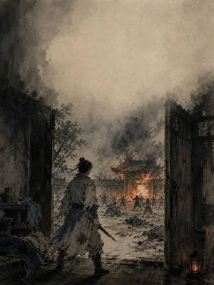
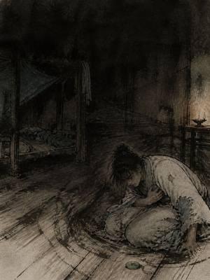
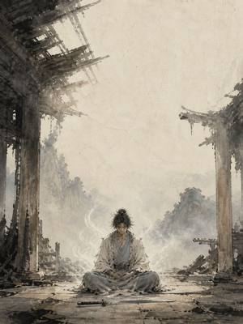

Tiếng nền cho từng cảnh. Chọn cảnh, copy prompt, tạo tiếng bằng công cụ anh
thích, rồi tải lên đây — game tự dùng bản của anh.
9 nhóm tiếng. Mỗi cảnh trong game thuộc một nhóm, nên chỉ cần 9 file là phủ
hết. Chưa tải lên nhóm nào thì game vẫn dùng tiếng tổng hợp sẵn trong máy — không bao giờ
im.
Dán vào ô tìm kiếm của thư viện (Freesound, Pixabay, YouTube…). Tìm bằng
tiếng Anh mới ra; tiếng Việt gần như không có.
Tải file về máy. Dài bao nhiêu cũng được — 2 phút, 5 phút, không sao.
Quay lại đây, chọn file dưới đúng cảnh, bấm 📤 Gửi tiếng này.
Bot tự lấy 30 giây đầu, chuyển mp3, cân âm lượng, rồi ghép vào game.
Cách 2 — anh muốn tự tạo bằng AI
Bấm 📋 Copy prompt của cảnh đó.
Dán vào công cụ sinh âm thanh, chọn 10 giây, bật loop nếu có.
Tải file về rồi gửi lên như cách 1.
Về 30 giây: file anh gửi dài bao nhiêu
cũng được, hệ thống tự cắt 30 giây đầu. Cảnh trong game chỉ 10 giây nên 30
giây là quá đủ, và file nhỏ thì tải nhanh trên điện thoại. File ngắn hơn 30 giây
thì giữ nguyên, không cắt.
Về thể loại: đây là âm thanh môi
trường (ambience) — tiếng của nơi chốn. Không phải nhạc: không giai
điệu, không nhạc cụ, không trống, không hòa âm. Nhạc nền lặp 10 giây thì người
chơi nhận ra máy đang lặp; tiếng môi trường thì lặp mà không lộ.
Định dạng nhận: mp3, wav, m4a, ogg,
flac. Gửi thẳng được tới 24 MB; lớn hơn thì nén bớt trước. Sau khi
gửi, bot tự lấy 30 giây đầu, chuyển về mp3 96 kbps và cân âm lượng về −18 LUFS.
🔑 Kết nối GitHub (làm 1 lần) — cần để trang
tự đưa tiếng lên thay anh. Dán token vào đây; token chỉ lưu trong trình duyệt này
(localStorage), không gửi đi đâu ngoài GitHub.
Chợ sớm Thất Huyền trấnNgõ nhỏ sau chợ — lời đồnGóc chợ — một ngày mòn mỏi
Bấm ảnh để xem to. Tiếng anh tải lên sẽ phát
đúng ở những cảnh này.
Chợ sớm: người dựng sạp, hàng hóa đặt xuống, bàn tán xa, tiếng bước chân trên đất. Không nhạc.
Bấm một cụm để copy. Tìm bằng tiếng Anh thì ra
kết quả; tìm bằng tiếng Việt hầu như không có.
⬜ Chưa có tiếng cho cảnh này — game đang dùng tiếng tổng hợp.
2Trận chiếntran⬜ chưa có
lưu làassets/am/tran.mp3
Dã Lang Bang tập kíchXuống trấn — cứu dânThất Huyền Môn — cổng vỡCổng đông — đối mặt địchCổng đông — giấu thực lựcCổng đông — dùng toàn lựcCổng đông — Thất Huyền quyềnCổng đông — gọi tên Hùng BáHỏa trường — cứu người
Bấm ảnh để xem to. Tiếng anh tải lên sẽ phát
đúng ở những cảnh này.
Trận đánh: thép chạm thép, đất đá, gỗ vỡ, hơi thở nặng, tiếng hét xa không rõ chữ. Không nhạc.
Bấm một cụm để copy. Tìm bằng tiếng Anh thì ra
kết quả; tìm bằng tiếng Việt hầu như không có.
⬜ Chưa có tiếng cho cảnh này — game đang dùng tiếng tổng hợp.
3Núinui⬜ chưa có
lưu làassets/am/nui.mp3
Đường mòn lên núi — chạng vạngHậu sơn — khe núi đêm, theo lời đồnHậu sơn — chôn trả lại
Bấm ảnh để xem to. Tiếng anh tải lên sẽ phát
đúng ở những cảnh này.
Núi cao: gió qua đá và cỏ, âm vực rộng, rất ít sinh vật. Không nhạc.
Bấm một cụm để copy. Tìm bằng tiếng Anh thì ra
kết quả; tìm bằng tiếng Việt hầu như không có.
⬜ Chưa có tiếng cho cảnh này — game đang dùng tiếng tổng hợp.
4Sân tậpsan⬜ chưa có
lưu làassets/am/san.mp3
Sân tập Thất Huyền Môn — giữa ngàySân tập — bị chèn épTân xá — luyện lén trong đêmSân tập — cãi lạiSân sau — đêm, dưới gốc cổ thụSân sau — chôn trả lại
Bấm ảnh để xem to. Tiếng anh tải lên sẽ phát
đúng ở những cảnh này.
Sân tập: chân trần trên nền đất nện, quần áo vải, hơi thở, một tiếng đáp tay xa. Không nhạc.
Bấm một cụm để copy. Tìm bằng tiếng Anh thì ra
kết quả; tìm bằng tiếng Việt hầu như không có.
⬜ Chưa có tiếng cho cảnh này — game đang dùng tiếng tổng hợp.
5Vườn thuốcvuon⬜ chưa có
lưu làassets/am/vuon.mp3
Vườn thuốc phía sau mônVườn thuốc — hỏi thẳngVườn thuốc — im lặngVườn thuốc — Mạc Đại Phu và khối ngọcVườn thuốc — chôn trả lại
Bấm ảnh để xem to. Tiếng anh tải lên sẽ phát
đúng ở những cảnh này.
Vườn thuốc: lá cọ nhau, côn trùng nhỏ, chim xa, tay hái lá. Không nhạc.
Bấm một cụm để copy. Tìm bằng tiếng Anh thì ra
kết quả; tìm bằng tiếng Việt hầu như không có.
⬜ Chưa có tiếng cho cảnh này — game đang dùng tiếng tổng hợp.
6Miếumieu⬜ chưa có
lưu làassets/am/mieu.mp3
Ngoài miếu — quan sátTrong miếu — xác người còn ấmĐoạt hộp — Đỗ Tam phản phệTu luyện kiếm đạo — đêm đầu
Bấm ảnh để xem to. Tiếng anh tải lên sẽ phát
đúng ở những cảnh này.
Miếu cổ: phòng đá rỗng, tiếng vọng dài, gió lùa, một tiếng chuông đồng xa. Không nhạc, không tụng kinh.
Bấm một cụm để copy. Tìm bằng tiếng Anh thì ra
kết quả; tìm bằng tiếng Việt hầu như không có.
⬜ Chưa có tiếng cho cảnh này — game đang dùng tiếng tổng hợp.
7Đêmdem⬜ chưa có
lưu làassets/am/dem.mp3
Tân xá — tu luyện đêm đầu

Đêm cuối — Dã Lang Bang tập kích
Bấm ảnh để xem to. Tiếng anh tải lên sẽ phát
đúng ở những cảnh này.
Đêm đồng quê: dế và côn trùng dày, gió nhẹ, chó sủa rất xa. Không nhạc.
Bấm một cụm để copy. Tìm bằng tiếng Anh thì ra
kết quả; tìm bằng tiếng Việt hầu như không có.
⬜ Chưa có tiếng cho cảnh này — game đang dùng tiếng tổng hợp.
8Lànglang⬜ chưa có
lưu làassets/am/lang.mp3
Sau trận — giữa đống đổ nátKết chương — bình minh Thất Huyền trấnTân xá Thất Huyền Môn — sángQuán nước đầu trấn — dò tinTân xá — đêm, lần song tu đầu tiên

Tân xá — khổ tu, lần thất bạiTân xá — suýt bị phát hiệnTân xá — đột phá Luyện Khí tầng haiSau trận — giữa đống đổ nátKết chương — bình minh Thất Huyền Môn
Bấm ảnh để xem to. Tiếng anh tải lên sẽ phát
đúng ở những cảnh này.
Làng quê: sinh hoạt thường ngày, gà, chó, tiếng người xa không rõ chữ, treo gió. Không nhạc.
Bấm một cụm để copy. Tìm bằng tiếng Anh thì ra
kết quả; tìm bằng tiếng Việt hầu như không có.
⬜ Chưa có tiếng cho cảnh này — game đang dùng tiếng tổng hợp.
9Tĩnhtinh⬜ chưa có
lưu làassets/am/tinh.mp3

Đột phá Luyện Khí
Bấm ảnh để xem to. Tiếng anh tải lên sẽ phát
đúng ở những cảnh này.
Yên ắng: phòng kín, tiếng vọng nhỏ, gỗ kêu, gió ngoài cửa sổ. Không nhạc. Không phải file hỏng.
Bấm một cụm để copy. Tìm bằng tiếng Anh thì ra
kết quả; tìm bằng tiếng Việt hầu như không có.
⬜ Chưa có tiếng cho cảnh này — game đang dùng tiếng tổng hợp.